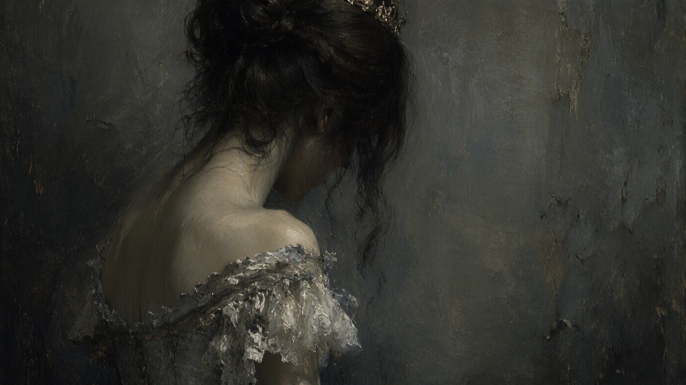
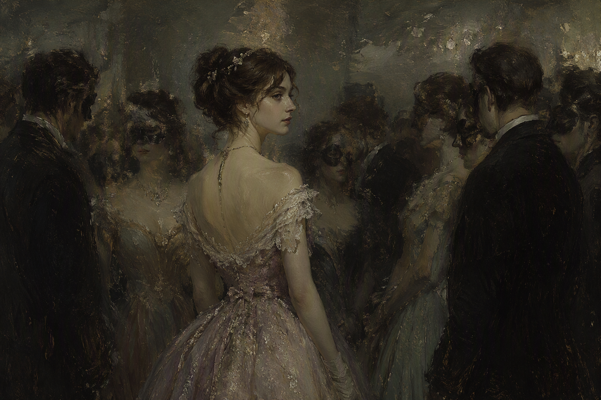
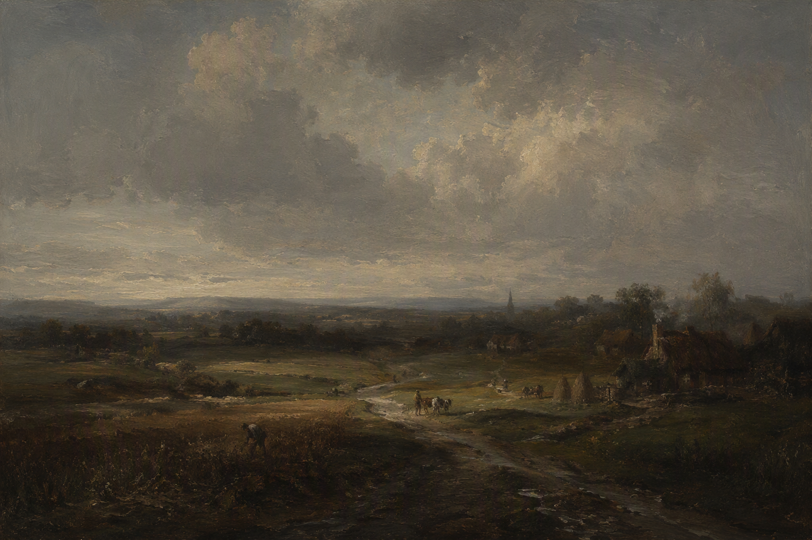

A Skrämmande Häuse é uma casa onde os limites entre o vivo e o inanimado deixam de existir. Nesta galeria de arte, as obras transcendem o tempo, as eras e o próprio espaço. Pinturas criadas há mais de um século desafiam a passagem dos anos e chegam diretamente à sua tela. Aprecie sua jornada enquanto percorre cada ambiente e descubra o mundo pela visão daqueles que já partiram.
Obras em Destaque


